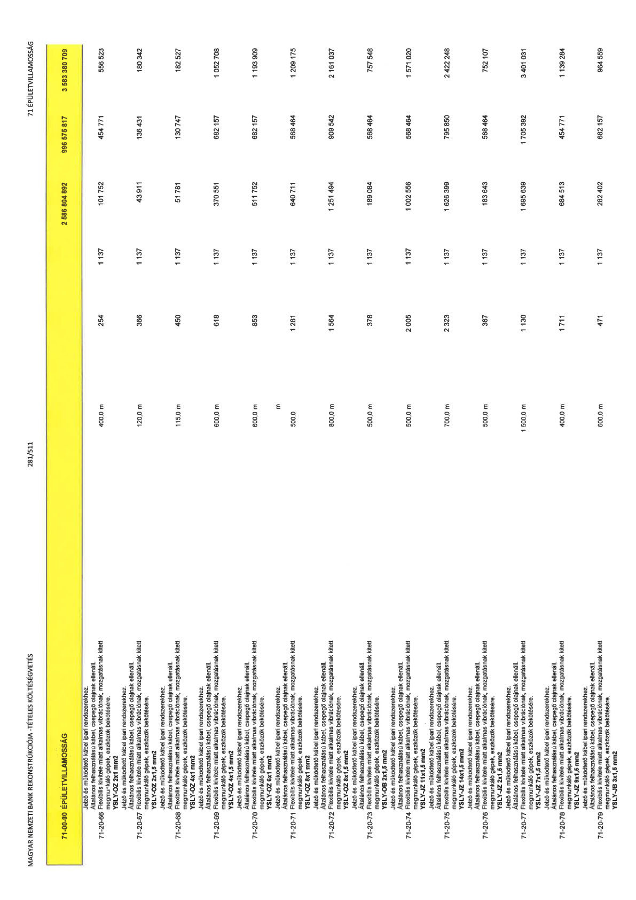

| Tétel | Menny. | Egys. | Anyag e.ár (net HUF) | Díj e.ár (net HUF) | Anyag összesen (net HUF) | Díj összesen (net HUF) | Anyag+Díj összesen (net HUF) |
|---|---|---|---|---|---|---|---|
| 71-00-00 ÉPÜLETVILLAMOSSÁG | NaN | NaN | 0 | 0 | 2 586 804 892 | 996 575 817 | 3 583 380 709 |
| Jelző és működtető kábel ipari rendszerekhez. Általános felhasználású kábel, csepegő olajnak ellenáll. Flexibilis kivitele miatt alkalmas vibrációnak, mozgatásnak kitett megmunkáló gépek, eszközök bekötésére. YSLY-OZ 2x1 mm2 | 0 | 0 | 0 | 0 | 0 | 0 | 0 |
| 71-20-66 | 400,0 | m | 254 | 1 137 | 101 752 | 454 771 | 556 523 |
| Jelző és működtető kábel ipari rendszerekhez. Általános felhasználású kábel, csepegő olajnak ellenáll. Flexibilis kivitele miatt alkalmas vibrációnak, mozgatásnak kitett megmunkáló gépek, eszközök bekötésére. YSLY-OZ 2x1,5 mm2 | 0 | 0 | 0 | 0 | 0 | 0 | 0 |
| 71-20-67 | 120,0 | m | 366 | 1 137 | 43 911 | 136 431 | 180 342 |
| Jelző és működtető kábel ipari rendszerekhez. Általános felhasználású kábel, csepegő olajnak ellenáll. Flexibilis kivitele miatt alkalmas vibrációnak, mozgatásnak kitett megmunkáló gépek, eszközök bekötésére. YSLY-OZ 4x1 mm2 | 0 | 0 | 0 | 0 | 0 | 0 | 0 |
| 71-20-68 | 115,0 | m | 450 | 1 137 | 51 781 | 130 747 | 182 527 |
| Jelző és működtető kábel ipari rendszerekhez. Általános felhasználású kábel, csepegő olajnak ellenáll. Flexibilis kivitele miatt alkalmas vibrációnak, mozgatásnak kitett megmunkáló gépek, eszközök bekötésére. YSLY-OZ 4x1,5 mm2 | 0 | 0 | 0 | 0 | 0 | 0 | 0 |
| 71-20-69 | 600,0 | m | 618 | 1 137 | 370 551 | 682 157 | 1 052 708 |
| Jelző és működtető kábel ipari rendszerekhez. Általános felhasználású kábel, csepegő olajnak ellenáll. Flexibilis kivitele miatt alkalmas vibrációnak, mozgatásnak kitett megmunkáló gépek, eszközök bekötésére. YSLY-OZ 6x1 mm2 | 0 | 0 | 0 | 0 | 0 | 0 | 0 |
| 71-20-70 | 600,0 | m | 853 | 1 137 | 511 752 | 682 157 | 1 193 909 |
| Jelző és működtető kábel ipari rendszerekhez. Általános felhasználású kábel, csepegő olajnak ellenáll. Flexibilis kivitele miatt alkalmas vibrációnak, mozgatásnak kitett megmunkáló gépek, eszközök bekötésére. YSLY-OZ 8x1 mm2 | 0 | 0 | 0 | 0 | 0 | 0 | 0 |
| 71-20-71 | 500,0 | m | 1 281 | 1 137 | 640 711 | 568 464 | 1 209 175 |
| Jelző és működtető kábel ipari rendszerekhez. Általános felhasználású kábel, csepegő olajnak ellenáll. Flexibilis kivitele miatt alkalmas vibrációnak, mozgatásnak kitett megmunkáló gépek, eszközök bekötésére. YSLY-OZ 8x1,5 mm2 | 0 | 0 | 0 | 0 | 0 | 0 | 0 |
| 71-20-72 | 800,0 | m | 1 564 | 1 137 | 1 251 494 | 909 542 | 2 161 037 |
| Jelző és működtető kábel ipari rendszerekhez. Általános felhasználású kábel, csepegő olajnak ellenáll. Flexibilis kivitele miatt alkalmas vibrációnak, mozgatásnak kitett megmunkáló gépek, eszközök bekötésére. YSLY-OB 2x1,5 mm2 | 0 | 0 | 0 | 0 | 0 | 0 | 0 |
| 71-20-73 | 500,0 | m | 378 | 1 137 | 189 084 | 568 464 | 757 548 |
| Jelző és működtető kábel ipari rendszerekhez. Általános felhasználású kábel, csepegő olajnak ellenáll. Flexibilis kivitele miatt alkalmas vibrációnak, mozgatásnak kitett megmunkáló gépek, eszközök bekötésére. YSLY-JZ 11x1,5 mm2 | 0 | 0 | 0 | 0 | 0 | 0 | 0 |
| 71-20-74 | 500,0 | m | 2 005 | 1 137 | 1 002 556 | 568 464 | 1 571 020 |
| Jelző és működtető kábel ipari rendszerekhez. Általános felhasználású kábel, csepegő olajnak ellenáll. Flexibilis kivitele miatt alkalmas vibrációnak, mozgatásnak kitett megmunkáló gépek, eszközök bekötésére. YSLY-JZ 14x1,5 mm2 | 0 | 0 | 0 | 0 | 0 | 0 | 0 |
| 71-20-75 | 700,0 | m | 2 323 | 1 137 | 1 626 399 | 795 850 | 2 422 248 |
| Jelző és működtető kábel ipari rendszerekhez. Általános felhasználású kábel, csepegő olajnak ellenáll. Flexibilis kivitele miatt alkalmas vibrációnak, mozgatásnak kitett megmunkáló gépek, eszközök bekötésére. YSLY-JZ 2x1,5 mm2 | 0 | 0 | 0 | 0 | 0 | 0 | 0 |
| 71-20-76 | 500,0 | m | 367 | 1 137 | 183 643 | 568 464 | 752 107 |
| Jelző és működtető kábel ipari rendszerekhez. Általános felhasználású kábel, csepegő olajnak ellenáll. Flexibilis kivitele miatt alkalmas vibrációnak, mozgatásnak kitett megmunkáló gépek, eszközök bekötésére. YSLY-JZ 7x1,5 mm2 | 0 | 0 | 0 | 0 | 0 | 0 | 0 |
| 71-20-77 | 1 500,0 | m | 1 130 | 1 137 | 1 695 639 | 1 705 392 | 3 401 031 |
| Jelző és működtető kábel ipari rendszerekhez. Általános felhasználású kábel, csepegő olajnak ellenáll. Flexibilis kivitele miatt alkalmas vibrációnak, mozgatásnak kitett megmunkáló gépek, eszközök bekötésére. YSLY-JZ 9x1,5 mm2 | 0 | 0 | 0 | 0 | 0 | 0 | 0 |
| 71-20-78 | 400,0 | m | 1 711 | 1 137 | 684 513 | 454 771 | 1 139 284 |
| Jelző és működtető kábel ipari rendszerekhez. Általános felhasználású kábel, csepegő olajnak ellenáll. Flexibilis kivitele miatt alkalmas vibrációnak, mozgatásnak kitett megmunkáló gépek, eszközök bekötésére. YSLY-JB 3x1,5 mm2 | 0 | 0 | 0 | 0 | 0 | 0 | 0 |
| 71-20-79 | 600,0 | m | 471 | 1 137 | 282 402 | 682 157 | 964 559 |
